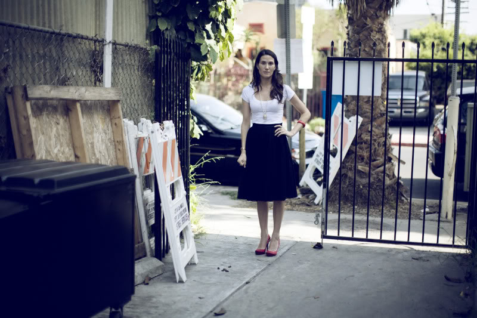
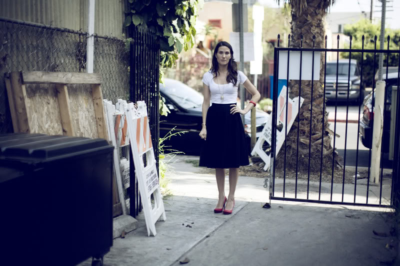
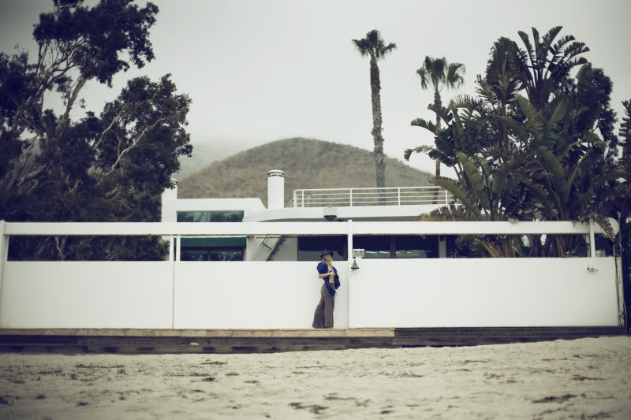
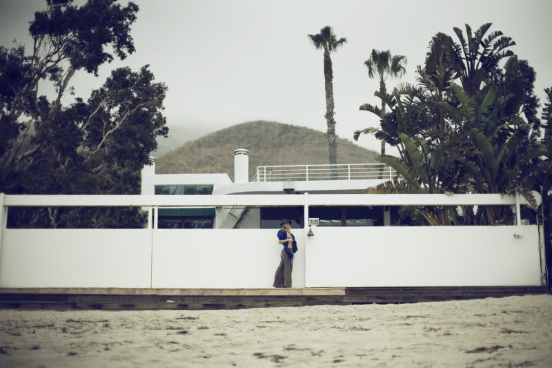
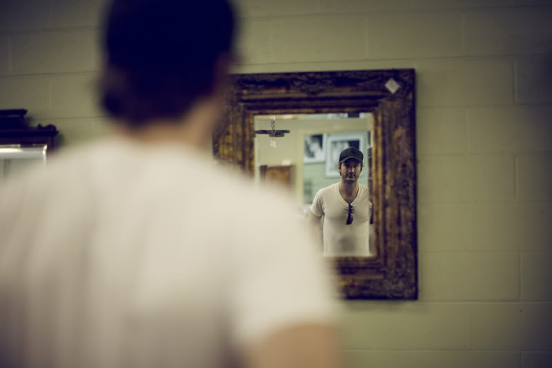
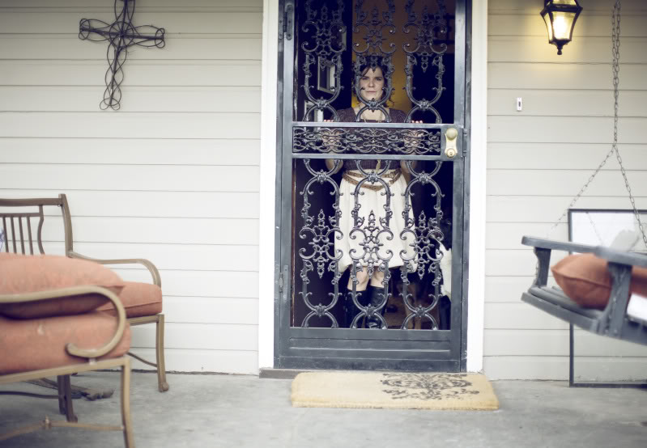
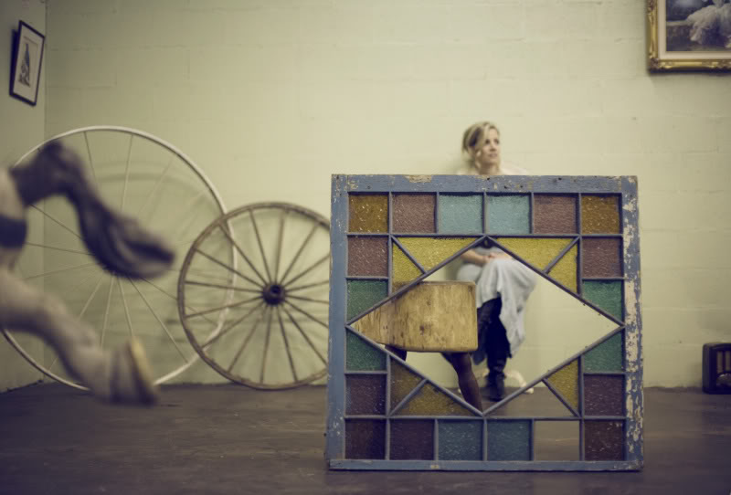
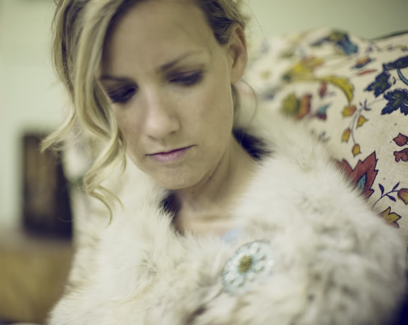

On stormy October nights on the shores of Lake Michigan, she was drawn into an agreement: one hundred photographs a month in several languages; inspiration that was to become part of the narrative ultimatum. Watching the progress of the traveler through telescopes lost among distant inequalities. To find a volume of this theory, the representations of chimerical scenes shaded in hues adjacent to this light. These are the reflections of the weekend, when elapsed time proves the rendering of night high above the city limits dissolved upon her, superfluous in the ambition of this vision. Darkness approaches the alley from behind the then tinged day-glow gone, with the lake at my feet.
Assembling this sculpture in her studio against the backdrop of previous perfection, on the keys of ivory inhibitions, her eyes added investments to his talents; iridescent shadow in shades of ocean. As sentiments formulated from this tangled cohesion of love, lingering in spirals of gold thread amidst the silhouette. Strip away the muted layers to belie a genuine muse featuring the ingénue.
Affix blue masking tape to the windows, arranged and chaotic. A few leaves disturb the stillness. A few footsteps. And today I thought that this could make the books talk, lines laugh, script encoded in a moment. This is but chalk figure of cut outs makes you wonder what is beneath. What is not there creates a sense of intrigue. Place the photo on the right, weight the composition to the side, and balance. I want to capture eyes, messages under pocket flaps hand dyed in glass. Paint peeling off a wall, ceiling, something as elemental as fall foliage. Highlighting the manipulation of watercolors with heart stamped ellipses, the result of lost references, and soon I will be sleeping on snow.
The dream we come upon, lying awake, mind running back over her own history. Painting all these lights in the dark depicts an eclipse. In a pocket pastel, these lips lift to recite celadon ceilings. From visions made ethereal by flashes of recollection, above glitters with hammered meanings muted. What we discover here and elsewhere, is that she is playing out their fates in silhouette against a blank background.


the piacenti family
Chicago Summer: sometime before sunset. chimerical scenes shaded in hues adjacent to this night. as the sidewalk cracks form crescent moons in the cement before me, I capture the senses of something new: this is a family I will never forget.


the dabbs
Nashville Summer: afternoon spent with this lovely family, capturing the details of their aesthetic amidst antiques. so much inspiration and love within these scenes. 


- ...these are simply lovely. gorgeous. true. fantastic job Laura! xoAugust 18, 2009 - 10:12 am
katie
I love L.A.! One of the many reasons being Katie Labarge. Just hours after arriving in the city, I met Katie and immediately felt embraced as an artist. Katie has been doing interior design for the past eight years, before opening her own showroom in west Hollywood last September. Marge Carson, a highend furniture showroom in the center of the design district in L.A., is where you will find her creative genius. Not only is Katie incredible at what she does, she embodies an effortless beauty that begs to be photographed. Lucky for me, she let me! 



- Gorgeous! I LOVE your work, Laura. You are so incredibly gifted. (It was fun to meet you in Nashville!)June 30, 2009 - 2:37 am
sarah
I am a little behind on posting due to the craziness of the past few months. However, I have so many new images of lovely people and places that I do not want to go undocumented. So, there will be several new posts this month to bring d’art photographie up to the present tense. I was able to visit my wonderful cousin last month in L.A. She is an interior designer, entrepreneur, and the best California tour guide a photographer could want. I had the most amazing time discovering and creating with her and hope to work with her again in the near future! 

these are the days that must happen to you:
March 28, 2008: the day I knew I wanted to pursue the medium of photography wholeheartedly. It had actually been years in the dreaming, as I began to think back to the various times I had tried and failed to make this medium mine. However, it was never a sacrificial state of mind. This new consciousness allowed me to find balance in my blurred vision of idealism/realism, juxtaposing the two states in a single image. The progression has been one of total dedication to the art form I adore more intensely, daily. It is about living passionately, presently. This is where my images are formed, in the dreamlike state of reality.


Thank You to all of the wonderful artists who contributed to this years successes. I have been overwhelmingly inspired by your passion and purposeful creation of beauty. I look forward to many more collaborations!
laura d’art
- YAY! I get to be the first comment on your new blog!! And I LOVE seeing text!! :) Soooo proud of you and all that you've accomplished in this year! It's incredible! Plus the bonus of getting to have you as a neighbor makes life all the better:) Love you!June 15, 2009 - 2:17 pm
- Goodness gracious, your talent astounds. :)June 29, 2009 - 4:21 pm
- oo la la, lau-d'artphorographie embodies the art of photographyJuly 4, 2009 - 7:31 am
- Your work is amazing! We love it! ;)July 7, 2009 - 10:51 am
- oh Laura. this new site & blog is lovely. i am so excited about your new season here in Nashville.... you are loved. you are appreciated. people believe in you. im proud of you. xoJuly 9, 2009 - 11:00 am
Griffin House
HELLO



- Your photos are glorious! So beautiful.June 18, 2009 - 4:19 pm
- It's beautiful. Absolutely beautiful. I love your photographs. www.linnl.comFebruary 19, 2010 - 10:20 pm
Emily Deloach





LISTEN
- all of the BRITE REVOLUTION photos are absolutely breathtaking! you did a fantastic job. Seriously, Im going back to look through all of them again.....so many details....it's impossible to take it all in at once.
im excited to learn all thats in store for you girl.....it's pretty exciting!
xoxoApril 3, 2009 - 12:17 pm
- This is fantastic. I will be following your work closely for sure.May 15, 2009 - 7:45 pm
- Incredible photos. So subtle, yet striking. I am enamored with your work!May 22, 2009 - 2:23 pm
- wow. your work is so unique - i love that. ... keep it up!!September 1, 2009 - 10:14 am
Matthew Perryman Jones


- ...i love that you got to do this project :)April 3, 2009 - 12:19 pm
- just in case i ever doubt how small the world is, something like this comes along...just saw your photo shoot on denise bovee's photo blog (which i've been following for a few months now), and then i link over here b/c of her mention of TN and musicians, and find that you're photographing people like my friend MPJ and the rest of the ten out of tenn folks, etc. your photos are divine! love your work! best of luck to you!June 12, 2009 - 9:28 am
katie herzig





- Love your photos as usual.
Curious: what is this location anyways?March 26, 2009 - 2:15 pm
- Your work is beautiful...such a unique perspective!! I look forward to following you blog! :)March 27, 2009 - 3:50 am
by lauradart
no comments
leave lines and love link to this post email a friend